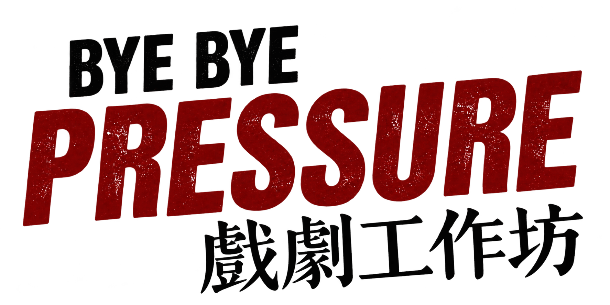

企業團隊 心理韌性培訓
以情緒調節、壓力覺察、跨世代溝通與團隊協作為主題，創造能夠真實交流的內訓氛圍。

聊聊合作
你想為誰安排一次練習？
依參與對象與想練習的議題，選擇合作起點。
以情緒調節、壓力覺察、跨世代溝通與團隊協作為主題，創造能夠真實交流的內訓氛圍。
透過遊戲與信任練習，陪青少年探索自我、教師拓展引導方式，也讓親子有機會好好聽彼此說話。
結合公益認購或青藝盟藝術教育專案，將企業資源連結青少年支持，透過工作坊與成果紀錄共創永續故事。

當我們願意走進一個角色，
也就開始看見另一種可能。
Bye Bye Pressure 是青藝盟以戲劇為媒介的情緒教育工作坊。透過身體感知、即興遊戲、情境模擬與角色換位，帶領參與者認識自己的情緒，也練習傾聽、表達與合作。
從企業會議室到校園與家庭，我們把藝術教育轉化為可以親身體驗的練習，讓理解從互動裡發生，再把這份連結帶回日常。
企業、校園與家庭，看看適合的方案藝術教育深耕
企業與公部門合作工作坊
從身體感知與情緒覺察開始，辨識壓力，為自己找到表達的空間。
透過角色換位與情境互動，看見不同觀點，練習傾聽與溝通。
在即興與合作任務中嘗試、回應，累積表達自我與團隊共創的信心。
帶狀課程建議每堂 3 小時、每月 1 堂，共 8 個月；也可先從 1 至 2 場體驗展開。
真實的相遇，留下真實的感受。

懷世代議員服務團隊戲劇工作坊
 看活動照片
看活動照片 裕融集團跨世代溝通戲劇工作坊
 看活動照片
看活動照片 玉山銀行戲劇工作坊
以前都是我在講，他在聽，
今天變成我們真的在對話。
親子家庭工作坊 家長回饋 2026.01.24
2026.08.19 至 08.20
宜鼎國際教育基金會暑期戲劇夏令營，陪 14 位員工子女與青少年，在兩天 16 小時的體驗中練習表達、合作與認識自己。
前後測自評皆呈正向提升
本次回收 9 份有效學生問卷，結果僅反映此營隊學員的自我評估。曾一起創造連結的合作單位
 以藝術陪伴，以專業引導。
以藝術陪伴，以專業引導。深耕藝術教育逾 26 年，長期投入青少年戲劇與社會情緒學習（SEL），擅長引導情緒覺察與團隊互動。從花樣戲劇節到風箏計畫，持續以藝術連結人與社會。
結合心理、教育、戲劇及創新領域的專業觀點，針對課程設計、師資培育與評鑑持續優化；講師組合依課程目標與對象安排。
依方案規劃課前測量、課中觀察、課後回饋與追蹤深化，關注自我覺察、信任感、溝通品質與創造意願。
依主題運用身體感知、戲劇遊戲、即興互動、角色換位、合作任務與反思分享，循序帶入情緒覺察、溝通及團隊連結。
可以。師資與內容會依參與對象、課程目標與需求規劃。洽詢時可先提供人數、對象、預計時段及希望處理的議題。
現有案例涵蓋 2至4 小時工作坊與兩天營隊；長期培力也有八堂帶狀課程規劃。實際時數與安排請與團隊討論。
可洽談企業內部培訓、社會影響公益認購，或結合花樣戲劇節、牽風箏的人等 ESG 專案。內容、費用與成果規劃依合作方案確認。